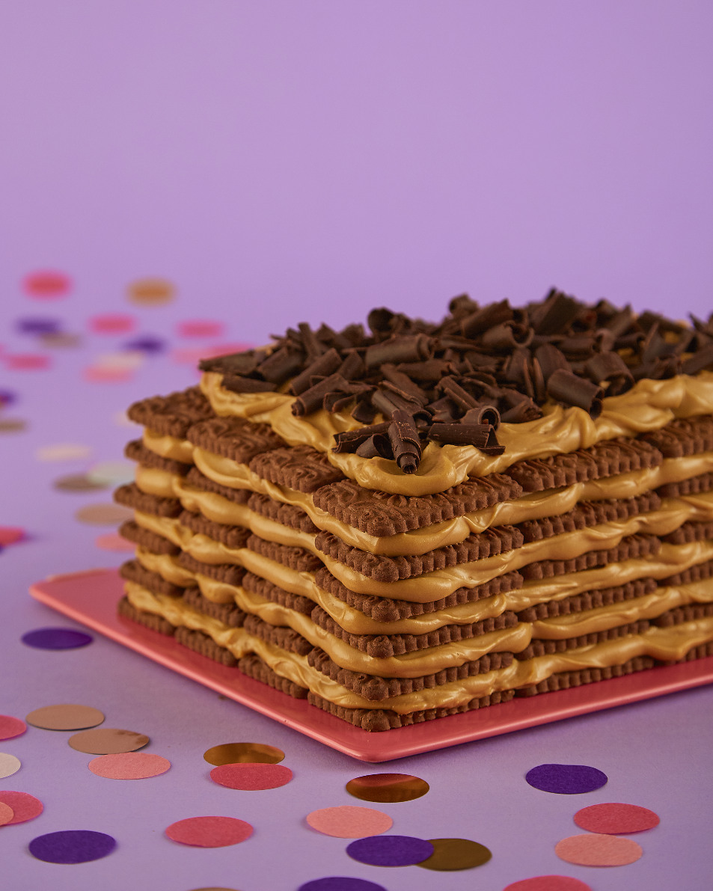

Chocotorta
Ingredientes
- 400 gr de dulce de leche (si es repostero mucho mejor)
- 400 gr de crema de leche o natilla.
- 750 gr de galletitas de chocolate.
- Leche o café para remojar las galletitas.
- 50 gr de chocolate (cobertura o de taza) semi amargo.
- 50 gr de cacao en polvo.
Procedimiento
- Comenzá a batir el dulce de leche hasta que adquiera un color más claro. Luego, añadí la crema y continuá batiendo a la velocidad más baja de la batidora hasta alcanzar el punto de “pico suave”. Tené cuidado de no pasarte, ya que puede cortarse. Si por alguna razón se corta, simplemente agregá un chorrito de crema y mezclá bien. Reservá la mezcla a un lado.
- Humedecé cada galletita y colocalas en una fuente formando una capa. Luego, añadí una capa de la crema de dulce de leche. Repetí el proceso alternando capas de galletitas y crema, hasta completar cuatro capas.
- Refrigerá durante una hora. Antes de servir, espolvoreá con cacao en polvo y, si querés, rallá un poco de chocolate amargo por encima.
